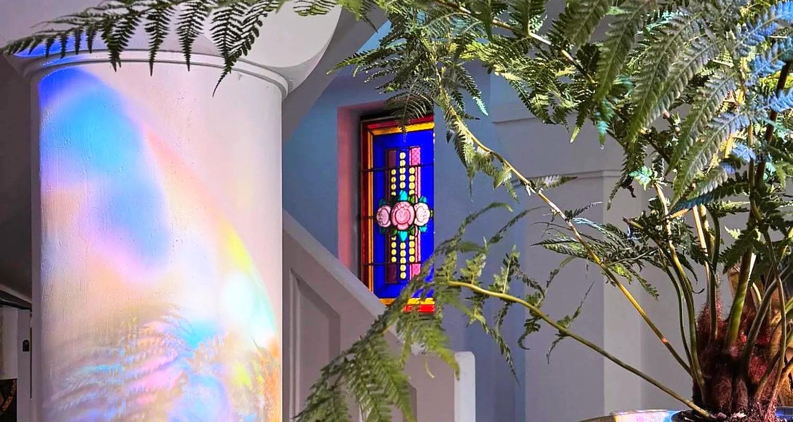

Façonner la lumière, sur mesure
Des vitraux uniques, imaginés pour votre lieu et réalisés à la main à l’atelier.
Sur mesure
Une œuvre pensée pour votre espace
Porte d’entrée, imposte, fenêtre, cloison, verrière ou pièce décorative : chaque création naît d’un échange sur vos envies, la lumière du lieu et son architecture.
Motifs contemporains ou inspiration classique, la composition, les couleurs et les textures de verre sont choisies avec vous pour donner une personnalité unique à votre intérieur.
Techniques
Le verre sous toutes ses formes
-
Vitrail traditionnel au plomb
Verres découpés à la main puis sertis dans un réseau de plomb soudé à l’étain : la technique des maîtres verriers.
-
Fusing
Des verres superposés fusionnent au four pour créer des pièces colorées, sans plomb, aux effets de matière uniques.
-
Thermoformage
Chauffé, le verre épouse la forme d’un moule : coupes, plats et éléments décoratifs en relief.
Méthode
De l’esquisse à la pose
Rencontre
Nous échangeons sur votre projet, le lieu, la lumière et votre budget.
Maquette
Une maquette en couleurs vous permet de visualiser le vitrail avant sa réalisation.
Choix des verres
Teintes, textures et transparences sont sélectionnées ensemble.
Fabrication
Découpe, sertissage et soudure : tout est réalisé à la main à l’atelier.
Pose
Le vitrail est installé chez vous et prend vie avec la lumière.
Un projet de création ?
Décrivez-nous votre idée, même au stade de l’envie : nous la ferons mûrir ensemble.